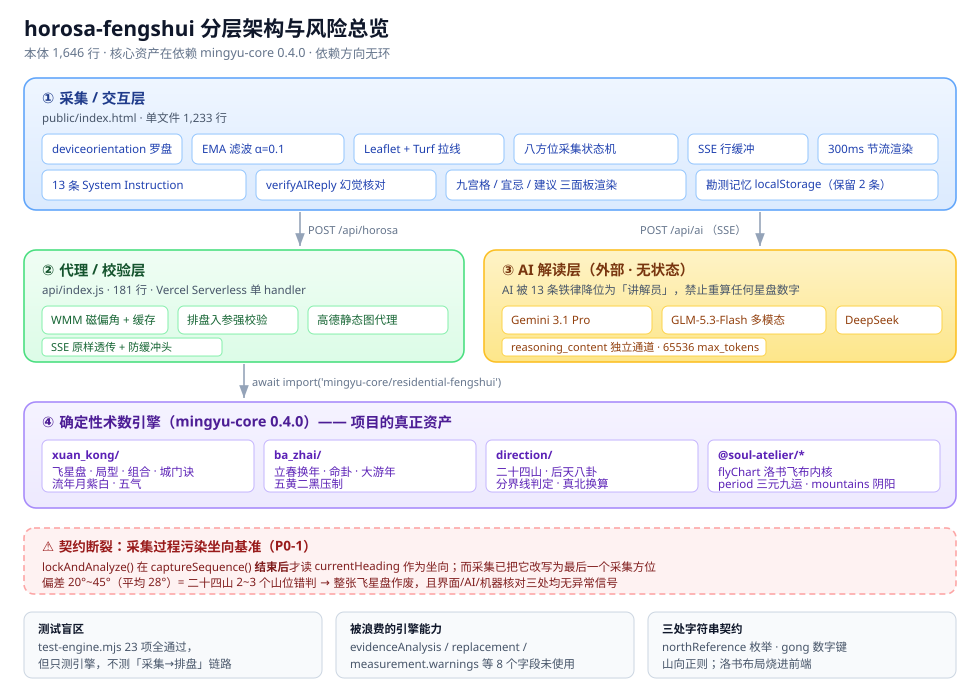
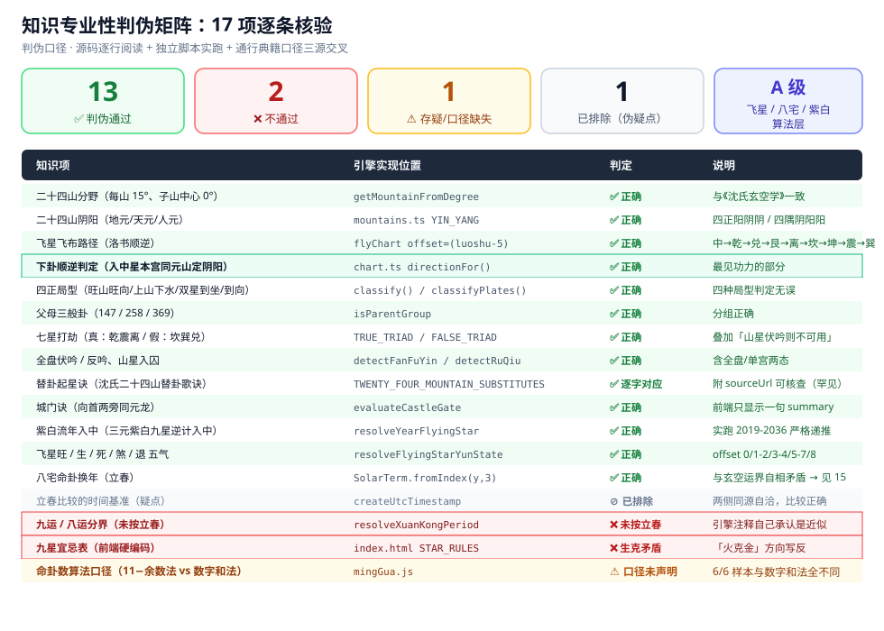
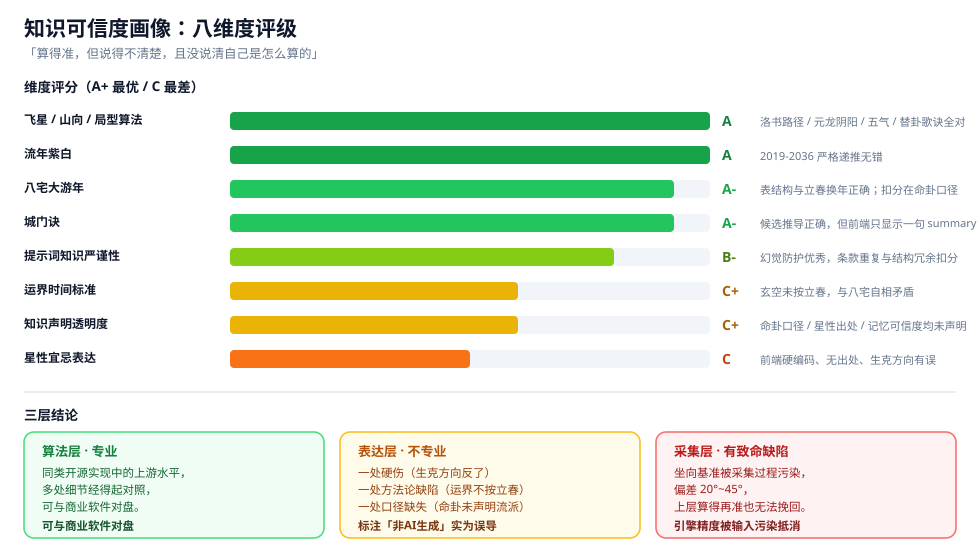
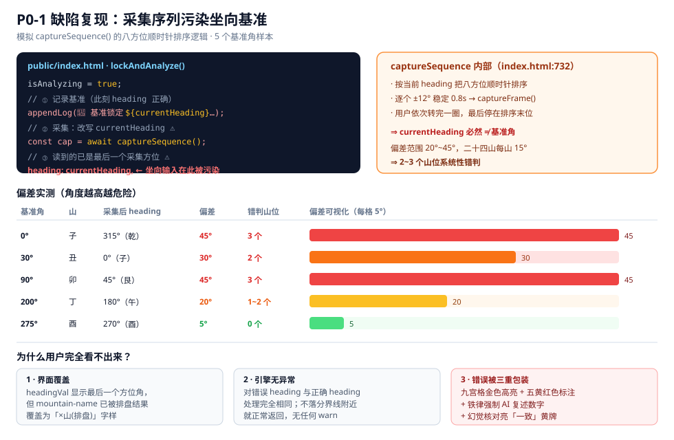
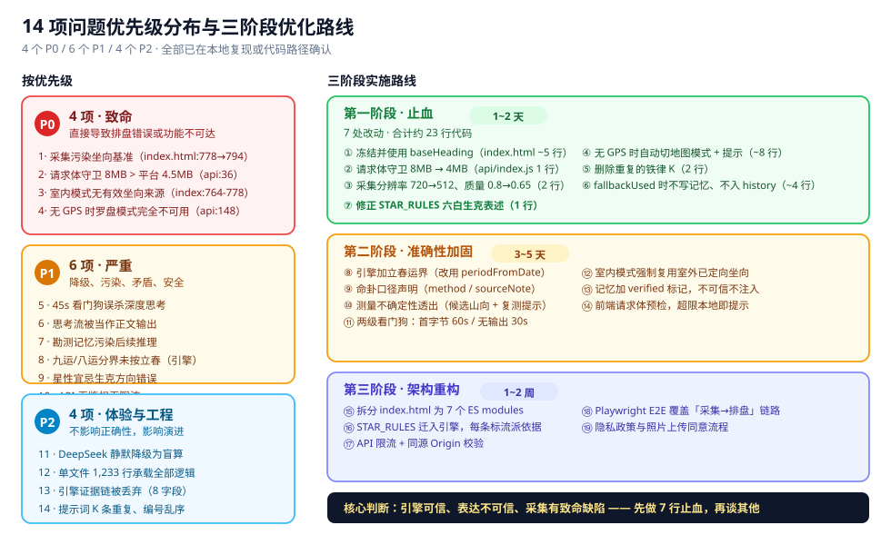

对基于 AR 实测 + 玄空飞星 / 八宅明镜排盘的移动端 Web 应用，展开架构分层、知识专业性判伪、用户问题识别与优化路线四个维度的完整审查。
先说结果，再说依据。
项目会在第一次真实使用中就给出错误坐向，而用户在界面、AI 文本、机器校验三处都得不到任何异常信号。
采集八方位的过程污染了坐向基准，偏差 20°~45°（平均 28°），等于 2~3 个山位错判，整张飞星盘作废。
排盘算法专业，表达层不专业。
飞星布盘、下卦顺逆、替卦歌诀、紫白流年全部经得起对照；但九运/八运分界未按立春、九星宜忌表生克方向写反、命卦口径未声明流派。
架构三分是清醒的，但存在一处根本性契约断裂与一个测试盲区。
核心资产在依赖包里而非本仓库；23 项测试全通过，但只测引擎不测「采集→排盘」链路——P0 缺陷正好落在这个盲区里。
| 维度 | 事实 | 评价 |
|---|---|---|
| 形态 | Vercel Serverless + PWA 单页，public/index.html 单文件 1,233 行 | 工程集中度过高 |
| 分工 | 前端只做测量 / 编排 / 约束，术数逻辑全在 mingyu-core | 架构自觉 |
| 防幻觉 | 13 条 System Instruction + verifyAIReply 机器核对 + 补拍闭环 | 同类上游水平 |
| 测量精度 | EMA 滤波、WMM-2025 磁偏角、按拉线长度动态算误差、二十四山边界敏感检测 | 建模严谨 |
| 引擎复用 | 8 个高质量结构化字段（evidence / measurement / replacement 等）前端完全未用 | 严重浪费 |
| 测试 | test-engine.mjs 23 项全通过，直调引擎不经 API 层 | 存在链路盲区 |
| 合规 | AGPL-3.0-only；API Key 存 localStorage；API 无鉴权；CORS 全开 | README 已诚实披露 |
四层结构，依赖方向无环，但层间契约有一处根本断裂。

项目实际是四层结构。关键判断是：项目的核心资产不在本仓库里，而在依赖 mingyu-core 中——玄空飞星、八宅大游年、二十四山、城门诀全部由引擎完成，本仓库只负责三件事：
deviceorientation）、地图（Leaflet + Turf 拉线）、摄像头（八方位环拍）这个分工是清醒的，没有把术数逻辑写进前端。
| 检查项 | 结果 |
|---|---|
| 前端 → 后端 | 单向 fetch，无反向调用 |
| 后端 → 引擎 | 动态 await import('mingyu-core/residential-fengshui')（api/index.js:126） |
| 引擎 → 地基 | @soul-atelier/xuankong → @soul-atelier/core（chart.ts 导入 flyChart/mountainOf/palaceByLuoshu） |
| 循环依赖 | 未发现 core 不反向引用 xuankong |
| 测试独立性 | 有盲区 test-engine.mjs 直调引擎，不经过 api 层，因此测不到 api 层的契约错误 |
项目没有用注册器 / 插件这类机制，绑定完全靠三处字符串契约：
| 契约 | 声明位置 | 消费位置 | 耦合度 |
|---|---|---|---|
northReference 口径串 | 前端 reqBody.northReference（index.html:795） | 引擎 resolveDoorNorth 三值枚举 | 低，但有陷阱 |
九宫 gong 数字键 | 引擎 palaces[].gong（1-9） | 前端 order=[4,9,2,3,5,7,8,1,6] 反查（index.html:570） | 中，硬编码洛书布局 |
山向正则 _M | 前端 24 山字符类（index.html:650） | verifyAIReply 匹配「坐X向Y」 | 中 |
order=[4,9,2,3,5,7,8,1,6] 把洛书布局烧进前端。引擎若改用「随坐山旋转」的 rotatedPalaceGrid（@soul-atelier/core/palaces.ts 已导出该能力但 mingyu-core 未使用），前端九宫格会整体错位且不报错。用户开启权限
→ getUserMedia(后置摄像头) + geolocation + DeviceOrientation.requestPermission
→ 选环境(室外/室内) → 选站位(门外定向/立极环拍/区域复查)
→ 罗盘稳定 1.5s
→ lockAndAnalyze()
├ isAnalyzing = true
├ captureSequence() ← 【断点1：currentHeading 在此被改写】
│ ├ 按当前朝向顺时针排序 8 方位
│ ├ 逐个 ±12° 稳定 0.8s → captureFrame() (canvas 720px, JPEG q0.8)
│ └ 全部完成 → return {frames, missed}
├ 读 currentHeading 组 reqBody ← 【断点2：读到的是最后一个方位角】
├ POST /api/horosa
│ ├ 校验 heading ∈ [0,360]、year 必填
│ ├ northReference==='magnetic' → 必须有 lat/lng → getDeclination() (WMM)
│ ├ generateResidentialFengshui()
│ │ ├ resolveResidentialOrientation → 真北换算 → 二十四山
│ │ ├ buildBazhai → 立春换年 → 命卦 → 大游年
│ │ ├ buildXuanKong → 运盘 → 山向盘 → 局型 → 组合 → 城门诀 → 流年
│ │ └ buildEvidencePrompt / buildPrompt
│ └ 返回 { status, meta, data }
├ enginePanel(hData) 渲染九宫格
├ window.__lastHorosa = {orientationText, mingGua} ← 供幻觉核对
├ [可选] POST /api/map → 高德静态图 base64
├ 组装 9 图 + promptText → callAIStream()
├ advicePanel + remindersPanel
└ saveMemoryRecord(localStorage，保留 2 条)| 层 | 校验手段 | 评价 |
|---|---|---|
| 引擎 | heading 范围/有限性、year 必填、磁北必带磁偏角、磁偏角 ∈[-30,30]、不确定度 ∈[0,45]、坐向严格相差 180°、坐山与度数一致、替卦须山向稳定且在兼向区 | 优秀 错误全部抛为可读中文 |
| 引擎 | 分界线敏感度 → candidateMountains 候选并列 + stability: '山向边界敏感' | 优秀 把不确定性显式化而非隐藏 |
| 后端 | content-length > 8MB → 413 | 失效 阈值高于平台上限，见 P0-2 |
| 前端 | 罗盘无有效数据时 return 避免误锁 0°（index.html:688） | 良好 |
| 前端 | 采集轮数上限 3 轮（index.html:1125） | 良好 但不保证请求体不超限 |
| 联动 | 幻觉机器核对：正则提取 AI 回复中的山向/命卦断言，与引擎结果比对 | 优秀设计 但只核对两项 |
| # | 优势 | 代价 |
|---|---|---|
| 1 | 引擎优先的架构自觉 13 条铁律开篇即写「排盘数据是纲领与权威依据，禁止自行重算或改写任何星盘数字」 | AI 被完全约束为「讲解员」，丧失对图像的独立判断力；排盘错时 AI 被强制复述错误数字，机器核对还会亮「一致」黄牌 |
| 2 | 测量不确定性被当作一等公民建模 按拉线长度动态算 atan(6/dist)，跨二十四山界时列候选盘 + 强制复测 | 精度声明越严谨，用户越难得到「确定答案」，产品感知上「每次都在提醒我不够准」 |
| 3 | 磁偏角不硬编码为 0 明确拒绝「缺 GPS 就按 0 算」，返回 400 并说明北京偏差近 7.5° 足以错判一整山 | 室内 / 无定位场景 100% 不可达，没有降级路径 |
| 4 | SSE 行缓冲 + 300ms 节流 解决分包截断与长思考 O(n²) 卡顿 | aiDiv.innerHTML += 逐段拼接，每 300ms 触发整块解析；超长回复（65536 tokens）仍会卡 |
| 5 | 思考流不实时展示 + 心跳提示 | 上游若不支持流式 reasoning_content（思考期完全静默），45s 看门狗必杀 |
| 6 | 证据链设计罕见地严谨analyzeCompassDirection 把「计算步骤 / 方位事实 / 限制事实」分开记录，每条带 limitation | 这套严谨性在后端被浪费——返回给前端的 evidenceAnalysis 前端完全没用，只取了 prompt 字符串 |
| 7 | README 风险清单诚实 主动列出无鉴权、WMM 2029 过期、API Key XSS 面、AGPL 传染性 | 诚实但无用——这四条只有开发者看，而部署者往往就是用户自己 |
引擎提供了大量高质量结构化字段，前端只用了极小一部分：
| 引擎字段 | 内容 | 前端使用情况 |
|---|---|---|
evidenceAnalysis | 分类证据链（计算步骤 / 事实 / 限制） | 未使用 |
xuankong.replacement | 替卦起星明细（参考山、替星、顺逆、来源 URL） | 未使用 |
xuankong.plates | 原始三盘数组 | 未使用 |
xuankong.daoShanXiang | 到山到向结构化判断 | 仅在 prompt 字符串里 |
bazhai.directionMeasurement | 分界线距离、候选宅卦、复测警示 | 未使用（前端另建 STAR_RULES 硬编码表替代） |
bazhai.gasRegulation | 五黄二黑压制规则 | 未使用 |
castleGate.candidates | 城门候选明细（正城门 / 副城门、山、旺星） | 仅用 summary 一句 |
combinations[].palaces | 组合所在宫位 | 未使用（只显示名称列表） |
17 项逐条核验：源码逐行阅读 + 独立脚本实跑 + 通行典籍口径三源交叉。


export function flyChart(center, direction) {
for (const palace of PALACES) {
const offset = (((palace.luoshu - 5) % 9) + 9) % 9;
const raw = direction === "forward" ? center + offset : center - offset;
result[palace.key] = wrap1to9(raw);
}
}洛书数与偏移：坎1→(-4)≡5、坤2→6、震3→7、巽4→8、中5→0、乾6→1、兑7→2、艮8→3、离9→4。顺飞时中宫 5 起步：乾得 5+1、兑 5+2、艮 5+3、离 5+4、坎 5+5、坤 5+6、震 5+7、巽 5+8。
这正是三元九运飞星的标准顺逆路径（中→乾→兑→艮→离→坎→坤→震→巽）。九运运盘 9 入中：乾1、兑2、艮3、离4、坎5、坤6、震7、巽8、中9 —— 与实测输出一致。
function directionFor(centerStar, source) {
const yinYang = centerStar === 5
? source.yinYang // 五黄无卦，借坐山本身阴阳
: mountainOf(palaceByLuoshu(centerStar).key, source.yuan).yinYang;
return yinYang === "yang" ? "forward" : "reverse";
}传统规则：入中之星（如 3 碧）本宫在震，取震宫中与原坐山同元龙之山（甲/卯/乙）定阴阳。此处 source.yuan 正是坐山的元龙索引，mountainOf(palaceByLuoshu(3).key, yuan) 即取震宫同元山。逻辑完全正确——这是玄空排盘最容易出错的地方。
SUBSTITUTE_STAR_POEM 引《地理辨正》/沈氏：
子癸并甲申，贪狼一路行；壬卯乙未坤，五位为巨门；
乾亥辰巽巳，连戌武曲名；酉辛丑艮丙，天星说破军；
寅午庚丁上，右弼四星临。
TWENTY_FOUR_MOUNTAIN_SUBSTITUTES 表：子癸甲申=1、壬卯乙未坤=2、辰巽巳戌乾亥=6、艮丙辛酉丑=7、寅午庚丁=9。逐字核对无误。
更难得的是 resolveReplacementLeg() 保留了起星的完整推导链（原入中星 → 本宫同元龙参考山 → 替星 → 顺逆），并在 replacement 对象里附带 sourceUrl 和 verificationSourceUrl 两个可核查来源。这在开源实现中极罕见。
2019 八白 │ 2020 七赤 │ 2021 六白 │ 2022 五黄 │ 2023 四绿 │ 2024 三碧
2025 二黑 │ 2026 一白 │ 2027 九紫 │ 2028 八白 │ 2029 七赤 …严格 9 年递推无跳变、无错位。2026 年一白入中与项目测试断言一致。
const offset = (star - yun + 9) % 9;
if (offset === 0) return '当运';
if (offset <= 2) return '生气';
if (offset <= 4) return '死气';
if (offset <= 7) return '煞气';
return '退气';与《玄空风水学》九运表一致。注释还特别指出「合十是另一种关系，不能用来推导死气」——说明作者踩过坑。
const PERIOD_BASE_YEAR = 1864;
export function resolveXuanKongPeriod(year) {
const offset = y - PERIOD_BASE_YEAR;
const cycleIndex = ((Math.floor(offset / 20) % 9) + 9) % 9;
const yun = cycleIndex + 1;
...
}引擎自己也知道这是近似——@soul-atelier/core/period.ts 注释明确写：
Note: the boundary is technically 立春 of the start year, not Jan 1. This uses the Gregorian year; for a date near 立春 of a 运-boundary year, use calendar's periodFromDate(y, m, d, engine), which resolves the boundary astronomically.
实跑验证：resolveXuanKongPeriod(2023) → 下元8运；(2024) → 下元9运；2024 立春精确时刻 = 2024年2月4日 16:27:07。
一栋 2024 年 1 月 15 日建成的房子，引擎判为九运；按传统立春换运口径，2024-02-04 16:27 之前仍属八运。整张盘的运星、山向盘顺逆、局型、城门全部错。
影响面：每年只有 1 月 1 日 ~ 立春（约 34 天）建造的房子受影响。概率低，但因为玄空盘错一星则全盘作废，后果是灾难性的而非渐进的。
加重因素：同一个项目里，八宅命卦严格按立春判定（SolarTerm.fromIndex(year, 3)）。用户填「2024-01-15 建造 + 1990-01-15 出生」，得到的是八运盘 + 1989 年命卦——两个时间标准混用，而项目对此零提示。
const STAR_RULES = {
...
6: { name: '六白武曲', tag: '吉', yi: '利事业权威，宜金属饰品',
buyi: '忌红色火性物品（火克金）' }, // ← 方向写反
...
};引擎实算：resolveShanXiangRelation(6, 9) 返回 克入——依 FLYING_STAR_WUXING，6=金、9=火，isKe(mountain, facing) 即 6金克9火 成立。
矛盾点：引擎说金克火（即火不受欢迎，金才是主导），前端说「忌火」。两者结论方向一致，但理由陈述错误——「火克金」是错的，应该是「金克火」。更要命的是同一页面 remindersPanel 同时会渲染引擎算出的 shanXiangRelation（「克出」），AI 收到的是「山星6金克向星9火」+「忌火」两条信息，会自行调和出一个扭曲的解释。
| 星 | 项目写法 | 通行口径常见写法 | 存疑点 |
|---|---|---|---|
| 2 二黑病符 | 忌久坐久卧，保持整洁干燥 | 坤艮为病符，宜静不宜动 | 「整洁干燥」属峦头建议混入理气表 |
| 5 五黄廉贞 | 忌动土装修、红黄色饰品、长期坐卧 | 五黄忌动土是共识；「忌红黄」仅部分流派 | 红色属火，火生土，理论上助土而非助煞，流派差异大 |
| 7 七赤破军 | 防口舌盗失，宜静不宜动 | 七赤为口舌金 | 方向可接受 |
| 9 九紫右弼 | 忌污秽杂物堆压 | 九紫喜庆宜明 | 可接受 |
根因：项目在架构上强调「理气唯一来源是引擎」，却在理气层之外又建了一张前端硬编码的表，且这张表没有任何出处标注。remindersPanel 标注「依据引擎盘面与通行星性口径推导（非AI生成）」——后者是误导性标注，因为九星宜忌部分完全来自本地常量，与引擎无关。
const remainder = positiveModulo(birthYear, 9);
const rawNumber = gender === 'male'
? normalizeMingGuaNumber(11 - remainder)
: normalizeMingGuaNumber(4 + remainder);
const number = rawNumber === 5 ? (gender === 'male' ? 2 : 8) : rawNumber;实跑对照（引擎 vs 民间常用「数字和法：男 10−S、女 5+S」）：
| 出生 | 性别 | 引擎 | 数字和法 | 是否一致 |
|---|---|---|---|---|
| 1990 | 男 | 坎（东四命） | 离 | ❌ |
| 1990 | 女 | 艮（西四命） | 乾 | ❌ |
| 1984 | 男 | 兑（西四命） | 乾 | ❌ |
| 1984 | 女 | 艮（西四命） | 离 | ❌ |
| 2000 | 男 | 离（东四命） | 艮 | ❌ |
| 2000 | 女 | 乾（西四命） | 兑 | ❌ |
6/6 全部不同。引擎用的是「年份除 9 取余 + 11/4」（部分流派使用的算法，与三元九运体系自洽）；数字和法是另一派。两者都是通行口径，但结果几乎完全不同——命卦决定四吉四凶方，等于整套人宅层结论全变。
项目的问题不是「算错了」，而是「没告诉用户自己算的是哪一派」。buildPrompt 只输出「命卦${gua}（${group}）」，没有任何 method / source 字段。
实跑：createUtcTimestamp(2024,1,4,12) 返回 1707048000000（毫秒），lichunCivil 返回 1707064027000。1707064027 秒 = 2024-02-04T08:27:07Z，即东八区 16:27:07；出生时间戳 1707048000 = 2024-02-04T04:00:00Z = 东八区 12:00。两者同为 UTC 基准，比较自洽。
结论：立春比较的时间基准正确（createUtcTimestamp 虽名为 Utc，实际接收的是 tyme4ts SolarTime 的本地钟面时分秒，两侧同源可比）。已排除此项为缺陷。
但仍有一处精度局限：出生只精确到「当日正午 12:00」，不含出生时辰。若某人出生于立春当日 16:00（立春在 16:27 前 27 分钟），引擎用 12:00 代表他，判为「未过立春」→ 归上一年命卦。误差窗口 = 立春时刻到当日正午之间。
SYSTEM_INSTRUCTION（index.html:317-338）的 13 条铁律在约束 AI 幻觉上设计优秀，但在知识准确性上有隐患：
| 条款 | 风险 |
|---|---|
| 铁律 A「禁止自行重算或改写任何星盘数字」 | 排盘错时（P0-1）AI 被强制复述错误数字，机器核对也会亮「一致」黄牌 |
| 铁律 H「室内：坐向一律以引擎排盘为准、禁止凭画面自行改判」 | 室内立极环拍时，引擎排盘来自本次采集的漂移值，AI 看到画面朝向与排盘矛盾却必须沉默 |
| 铁律 I「输出【重拍请求】」 | 兜底路径下 fullReply = reasoningFull（思考流），思考流里出现「重拍」二字会误触发 |
| 铁律 M「专业词首次出现用括号白话解释」 | 与「引擎排盘要点开篇」的结构要求叠加，前 200 字变成术语解释区，体验割裂 |
| 存在两条重复的「K. 回复结构」 | index.html:331 与 334 完全重复，第一条的「（引擎优先）」是残留。浪费 token |
saveMemoryRecord({
ts: new Date().toLocaleString('zh-CN'),
mode: surveyText(),
orientationText: sf, // ← 来自引擎，可能已错卦
periodLabel: tp,
mingGua: hData.bazhai ? hData.bazhai.mingGua : null,
summary: (reply || '').replace(/<[^>]+>/g, '').slice(0, 200), // ← 来自 AI
});记忆（2 条本轮 + 前次）会被拼进下一次的用户 prompt，并按铁律 J 要求 AI「像复诊的老医师一样先回顾既往结论」。风险：
orientationText 存入可能已错卦的坐向，下一轮会被当作「既往结论」注入summary 是未经验证的 AI 文本，无任何标记就成为下一轮的「记忆」verifyAIReply 只核对坐向与命卦，不核对记忆里的星盘结论4 个问题，全部已在本地复现或代码路径确认。

// index.html:764-778 lockAndAnalyze()
isAnalyzing = true;
appendLog(`📍 基准锁定 ${currentHeading.toFixed(1)}°。${surveyText()}`); // ① 记录基准
const cap = await captureSequence(); // ② 采集，改变 currentHeading
if (!cap) return;
...
// index.html:793-797 组装请求
const reqBody = {
heading: currentHeading, // ③ 读到的已是最后一个采集方位
northReference: usedMapCalibration ? 'true' : 'magnetic',
...
};captureSequence 内部（index.html:732）按当前朝向对八方位排序，用户依次转完，currentHeading 必然停在排序后的最后一格。
| 基准锁定角 | 山 | 采集顺序 | 采集后 heading | 偏差 | 错判山位 |
|---|---|---|---|---|---|
| 0° | 子 | 正北→东北→…→西北 | 315°（乾） | 45° | 3 个 |
| 30° | 丑 | 东北→正东→…→正北 | 0°（子） | 30° | 2 个 |
| 90° | 卯 | 正东→东南→…→东北 | 45°（艮） | 45° | 3 个 |
| 200° | 丁 | 西南→正西→…→正南 | 180°（午） | 20° | 1~2 个 |
| 275° | 酉 | 西北→正北→…→正西 | 270°（酉） | 5° | 0 个 |
为什么发现不了：① headingVal 显示实时 heading，采集完显示最后一个方位角，而 mountain-name 早已在 index.html:842 被排盘结果覆盖为「×山(排盘)」——用户看到的是「排盘」字样，不会意识到它来自错误输入；② 引擎对错误 heading 与正确 heading 处理完全一样；③ 即使落在分界线附近，measurement.warnings 也没有传给前端。
async function lockAndAnalyze() {
// ... apiKey 校验
isAnalyzing = true;
logPanel.innerHTML = '';
analysisRound = 1;
retakeBtn.style.display = 'none';
// ★ 修复：在采集前冻结基准角
const baseHeading = currentHeading;
const baseMountain = getMountain(baseHeading);
appendLog(`📍 基准锁定 ${baseHeading.toFixed(1)}°（${baseMountain}山）。${surveyText()}`);
const cap = await captureSequence();
if (!cap) return;
// ★ 修复：采集后恢复基准角，避免残留状态影响显示与后续
currentHeading = baseHeading;
smoothedHeading = baseHeading;
headingVal.innerText = baseHeading.toFixed(1);
const reqBody = { heading: baseHeading, ... }; // ★ 用 baseHeading
}验证方法：修复后重复上述模拟，reqBody.heading 应恒等于基准锁定角。
// 请求体大小防护：Vercel 函数体上限约 4.5MB，多轮图片历史可能累积超限
const contentLength = Number(req.headers['content-length'] || 0);
if (contentLength > 8 * 1024 * 1024) {
return res.status(413).json({ error: '请求体过大（>8MB）...' });
}注释自己说 4.5MB，代码设 8MB——守卫永远不会被触发，因为请求在到达这段代码之前就被 Vercel 平台层拒绝了。
| 轮次 | 累计帧数 | 估算 base64 总量 | 结果 |
|---|---|---|---|
| 第 1 轮 | 8 | ~875 KB | 正常 |
| 第 2 轮（补拍） | 16 | ~1,750 KB | 正常 |
| 第 3 轮（补拍） | 24 | ~2,625 KB | 逼近上限 |
| 4 轮 / 更大图 / 加外局图 | 32+ | >3,500 KB | 可能超限 |
chatHistory 会把所有轮次的 base64 全部保留（index.html:1138-1142），且每次提问都重发整个历史。用户可见后果：等了两分钟，看到红色「分析中断: …413」。
'请求体过大。请点🔄重新勘测以清空图片历史，或减少补拍轮次。'JSON.stringify(body).length 估算，超限则本地提示，不浪费 2 分钟等待站位指引提供三种模式，但只有一种有合理坐向来源：
| 模式 | 环境 | 引导文案 | 实际坐向来源 |
|---|---|---|---|
orientation 门外定向 | 室外 | 站在大门正前方 2-3 米，镜头正对大门 | ✅ 合理（镜头朝向≈坐向的反向，即向） |
interior 立极环拍 | 室内 | 站在平面中心点，依次对准八方位 | ❌ 无有效坐向来源 |
zone 区域复查 | 室内 | 靠近待查区域 1-1.5 米 | ❌ 同上，且不应重新排盘 |
室内模式的核心动作是「环拍」，用户站位和朝向是任意的。第一次自动锁定时 currentHeading 是用户恰好面朝的方向（可能是卧室床的方向），这个角度被当作坐向发给引擎 → 排出一个完全无意义的盘。而铁律 H 明确要求「室内：坐向一律以引擎排盘为准、禁止凭画面自行改判」，于是 AI 拿到一个随机坐向的权威排盘，还被禁止质疑。
localStorage.HOROSA_SITUATING 是否已有经确认的坐向，没有则提示「请先在室外完成坐向定向」并提供跳转zone 区域复查不重新排盘，只把新帧追加到已有 hData 的解读中isMapMode=true），由用户显式拉线确定真北朝向，不依赖罗盘if (ref === 'magnetic') {
if (typeof lat !== 'number' || typeof lng !== 'number') {
return res.status(400).json({
message: '罗盘测向需要 GPS 坐标以计算当地磁偏角（不可硬编码为 0，否则坐向可偏差近 10°）。'
});
}
fengshuiInput.magneticDeclinationDegrees = getDeclination(lat, lng);
}拒绝的动机是正确的（宁可报错也不给错数据），但没有提供替代路径。室内 GPS 可能漂移到几百公里外或直接失败（index.html:1214 只 console.warn），此时 userLat/userLng 为 null → 后端 400 → 用户看到红色报错 → 室内勘察这个核心场景 100% 不可达。
document.getElementById('switch-mode-btn').click()）getCurrentPosition 改为 { enableHighAccuracy: true, timeout: 20000, maximumAge: 30000 }，并 await 一个 Promise 让用户有感知6 个 P1 + 4 个 P2。

| # | 级别 | 问题 | 位置 | 触发条件 | 用户可见后果 |
|---|---|---|---|---|---|
| 1 | P0 | 采集污染坐向基准 | index.html:778→794 | 每次罗盘模式勘测 | 排盘坐向错 2~3 个山位，全盘作废 |
| 2 | P0 | 请求体守卫阈值失效 | api/index.js:36 | 2~3 轮补拍后 | 平台级 413，用户看到「分析中断」 |
| 3 | P0 | 室内模式坐向来源错误 | index.html:764-778 | 选「室内·立极环拍」 | 拿室外定向数据当坐向，或用随机朝向排盘 |
| 4 | P0 | 无 GPS 时罗盘模式不可用 | api/index.js:148-155 | 室内 / 无定位 | 400 报错，核心功能不可达 |
| 5 | P1 | 45s 看门狗误杀深度思考 | index.html:976-977 | GLM 思考期上游静默 | 首次分析直接失败 |
| 6 | P1 | 思考流被当作正文输出 | index.html:1096-1102 | GLM 两次重试无正文 | 中英混杂推理流冒充解读 |
| 7 | P1 | 勘测记忆污染后续推理 | index.html:883-890 | 跨会话 | 错误坐向被当「既往结论」注入 |
| 8 | P1 | 九运/八运分界未按立春 | mingyu-core/xuan_kong | 1/1~立春建造 | 整盘运星错（引擎层） |
| 9 | P1 | 星性宜忌生克方向错误 | index.html:600 | 排盘含 6/9 星 | AI 收到矛盾指令 |
| 10 | P1 | API 无鉴权无限流 | api/index.js 全局 | 公开部署后 | 任何人可消耗你的函数配额 |
| 11 | P2 | DeepSeek 静默降级为盲算 | index.html:930-941 | 选 DeepSeek | 无图像，仅理气，但提示不明显 |
| 12 | P2 | 单文件 1,233 行承载全部逻辑 | public/index.html | — | 无法测试、无法复用 |
| 13 | P2 | 引擎证据链被丢弃 | hData.evidenceAnalysis | — | 边界敏感信息丢失，用户看不到「存在候选盘」 |
| 14 | P2 | 提示词 K 条重复、编号乱序 | index.html:331-334 | — | 浪费 token、结构混乱 |
let watchdog = setTimeout(() => { streamTimedOut = true; abortCtrl.abort(); }, 45000);
const resetWatchdog = () => { clearTimeout(watchdog); watchdog = setTimeout(..., 45000); };看门狗按「无输出时长」重置，设计正确。但前提是上游在思考期持续流式输出 reasoning_content。若 GLM 部署不支持流式 reasoning（部分企业版 / 代理网关会关闭），或 reasoning_effort: 'high' 下思考阶段本就不吐 token，则 45s 内无任何字节 → 强制 abort。用户配置了 max_tokens: 65536 + reasoning_effort: 'high'，本身就是超长请求设计，与 45s 冲突。
修复：① 两级看门狗——首个字节 60s（首 token 容忍）、之后 30s 无输出才杀；② 思考期就显示「仍在思考（已 Ns）」心跳（现有心跳只在 reasoning_content 到达后才启动，恰在最需要提示的时候不显示）；③ 允许用户调高超时（60/120/180s）。
if (provider === 'glm' && reasoningSeen) {
fullReply = reasoningFull; // ← 思考流直接当正文
fallbackUsed = true;
aiDiv.innerHTML += escHtml(fullReply).replace(/\n/g, '
');
stopThinkingHint('⚠️ 思考完成但未生成正文，已将思考内容作为解读输出（见下方）');
}虽然标注了警告并跳过机器核对，但：① reasoningFull 是模型内部推理，通常中英混杂、逻辑跳跃，与 System Instruction 要求的结构完全不同；② 它会被写进 chatHistory（index.html:1108），污染后续所有对话上下文；③ saveMemoryRecord 会把它的前 200 字存为「勘测记忆摘要」，成为跨会话的「既往结论」；④ 用户无从判断哪段是「解读」、哪段是「思考」。
修复：① 兜底改为结构化降级——不直接吐 reasoningFull，而是提示「模型未能生成正式解读，以下为推理过程摘要（仅供参考）」，并把 reasoningFull 只存入 chatHistory 的 metadata 不进正文；② 连续两次失败后停止重试并明确告知用户（当前逻辑会重试到耗尽）；③ saveMemoryRecord 对 fallbackUsed 的结果不写入记忆。
saveMemoryRecord({
ts, mode, orientationText, periodLabel, mingGua, summary,
verified: !fallbackUsed, // ★ 新增
engineVersion: hData.xuankong?.engine?.version ?? 'unknown',
sitDegree: hData.xuankong?.measurement?.sitDegree ?? null, // ★ 新增：记录真实度数便于复核
mountainConfirmed: false, // ★ 新增：是否经用户确认
});并在 memoryText() 注入时标注可信度：（第1次，引擎已确认，sitDegree=177.5°）。
补充具体攻击面：
/api/ai 是开放代理——任何人可用你的 Vercel 函数转发任意请求到你配置的三家 API。虽然 API Key 由请求方提供（不花你的钱），但会消耗你的函数执行时长与出网流量/api/map 会用请求方提供的 gaode_key 请求高德——可用于探测他人 Key（虽然响应不回显 Key，但可通过错误信息差异判断 Key 是否存在）/api/horosa 是纯计算，成本低但可被批量刷修复：① 引入 Vercel Firewall 限流（按 IP 100 次/小时）；② /api/ai 加同源校验（Origin 头必须匹配部署域名），挡掉跨站滥用；③ 生产环境移除 /api/health（无信息量且暴露技术栈）。
if (chatHistory.length === 2) {
appendLog('⚠️ 提示：您选择了 DeepSeek，该模型不支持视觉，已自动剔除图片数据进行纯理气盲算。', 'system-log');
}三重问题：① chatHistory.length === 2 只在首次提示，补拍一轮后不再提示；② 「纯理气盲算」意味着用户上传的 8 张照片完全没用上，但用户以为 AI 在看图；③ 选 DeepSeek 的用户很可能不知道 DeepSeek-chat 无视觉能力。
修复：设置面板把模型选项改为带能力标注的卡片（DeepSeek-chat · 纯文本，不看图），并在选择时立即提示，不要等到分析阶段。
混杂了：CSS 设计系统（200 行）、HTML 结构（200 行）、System Instruction（22 行长字符串）、排盘面板渲染（4 个函数）、罗盘滤波、SSE 解析、AI 重试状态机、勘测记忆、localStorage 存取、8 方位采集状态机。
至少拆成：styles.css / prompts.js（提示词与铁律）/ compass.js（罗盘与采集）/ panels.js（九宫格/宜忌/建议渲染）/ ai-stream.js（SSE 与重试）/ storage.js（设置与记忆）/ main.js（编排）。
收益：可测试（当前无法为任何函数写单测）、可复用、提示词可被独立审阅（现在 2000+ 字藏在一个 template literal 里）。
| 字段 | 内容 | 建议用法 |
|---|---|---|
| hData.xuankong.measurement | stability、nearestBoundaryDistanceDegrees、candidateMountains、warnings | 在九宫格上方显示「⚠️ 当前读数距分界仅 2.3°，可能为子/癸山，建议复测」 |
| hData.evidenceAnalysis | 分类证据链 | 折叠面板「查看排盘依据」 |
| hData.xuankong.replacement | 替卦起星明细 | 替换下卦时展示推导链 |
| hData.xuankong.combinations[].palaces | 组合所在宫位 | 在九宫格对应宫位加角标 |
| hData.bazhai.directionMeasurement | 候选宅卦、宅卦稳定性 | 宅卦不稳定时并列展示 |
先修 P0 的两处（各 3~5 行代码），再做 P1 加固，最后才是架构重构。
| 序 | 改动 | 文件 | 行数 |
|---|---|---|---|
| 1 | 冻结并使用 baseHeading | public/index.html | ~5 行 |
| 2 | 请求体守卫 8MB → 4MB | api/index.js | 1 行 |
| 3 | 采集分辨率 720→512、质量 0.8→0.65 | public/index.html | 2 行 |
| 4 | 无 GPS 时自动切地图模式 + 提示 | public/index.html | ~8 行 |
| 5 | 删除重复的铁律 K | public/index.html | 2 行 |
| 6 | fallbackUsed 时不写记忆、不入 history | public/index.html | ~4 行 |
| 7 | 修正 STAR_RULES 六白生克表述 | public/index.html | 1 行 |
| 序 | 改动 | 说明 |
|---|---|---|
| 8 | 引擎加立春运界 | 改用 periodFromDate，无月日时输出边界提示 |
| 9 | 命卦口径声明 | 返回值加 method / sourceNote，前端展示 |
| 10 | 测量不确定性透出 | 九宫格上方显示 measurement.warnings 与候选山向 |
| 11 | 两级看门狗 | 首字节 60s / 无输出 30s，且思考期显示心跳 |
| 12 | 室内模式强制室外定向 | 无坐向时引导跳转 |
| 13 | 记忆加 verified 标记 | 不可信记忆不注入或标注注入 |
| 14 | 前端请求体预检 | 本地估算，超限立即提示 |
| 序 | 改动 | 说明 |
|---|---|---|
| 15 | 拆分 index.html 为 ES modules | 7 个模块，见 P2-12 |
| 16 | STAR_RULES 迁入引擎 | 让「确定性输出」的标注名副其实，每条标流派依据 |
| 17 | API 限流 + 同源校验 | Vercel Firewall + Origin 检查 |
| 18 | 前端补 E2E 测试 | Playwright 覆盖「采集→排盘」链路（当前测试盲区） |
| 19 | 隐私政策与同意流程 | 首次启动时明示「照片将上传至 X 服务商」 |
做 P0-1 的 5 行改动。冻结 baseHeading。
它是唯一一个「不改这 5 行，其他所有优化都建立在错误输入上」的问题。
修复后应能通过以下 10 项检查。
reqBody.heading 恒等于基准锁定角reasoning_effort: high + 65536 tokens，思考 60s 不断线chatHistory 中不出现 reasoning_contentlocalStorage.HOROSA_MEMORY 中每条记录含 verified 与 sitDegreemingyu-core + @soul-atelier/* 全部关键模块）；② 独立验证脚本实跑（磁偏角符号、紫白流年表、九运全表、立春分界、命卦口径、八方位 heading 漂移模拟、运行时风险）；③ 通行典籍口径对照（《沈氏玄空学》《玄空风水学》《地理辨正》）；④ node test-engine.mjs 实跑 23/23 通过。public/index.html 的 2000+ 字提示词为单字符串，未逐句拆解每条铁律的语义质量；gen-icons.mjs 与 manifest.json 未深入分析（PWA 细节非本次关注重点）。git diff --stat 输出为空，临时验证脚本已清理。
horosa-fengshui 深度拆解分析报告 · 2026-10-04 · 分析对象：本地仓库 HEAD f7ddc6a，24 次提交
配套明细文档：analysis/horosa-fengshui架构实现分析.md · analysis/horosa-fengshui知识专业性判伪报告.md · analysis/horosa-fengshui用户问题清单与优化建议.md